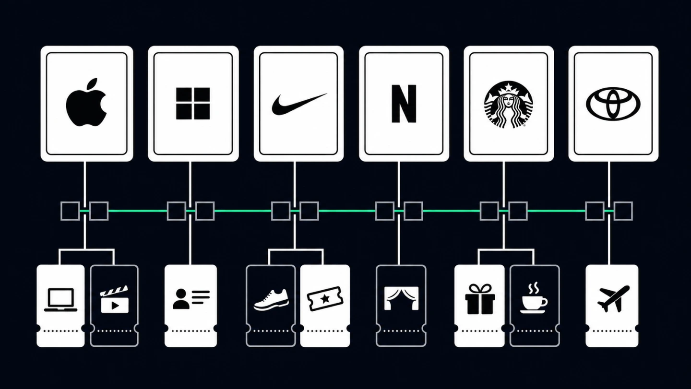

01
Source
Find benefit options that fit the audience and objective.
Product accessPreview invitation
ExperiencesPartner opportunities
DiscountsApproved offers
Yutai is building an AI-native application layer that connects stock holdings with relevant benefits, guides owners through access, and sources, proposes and operates programmes for business partners.
Stocks · Users · Programme rules
You set the objective.
Yutai connects the work.
Owners must discover programmes, understand how their holdings count and navigate the requirements. Issuers and brokers must find worthwhile benefits, define access and coordinate operations. Yutai is designed to take on this work.
The AI connects stocks, people and programme requirements. It makes the available options and next steps understandable. The same service can live in Yutai’s app or inside a broker or exchange, according to the partner’s needs.
A dedicated ownership-benefit experience
An embedded experience shaped to partner needs
Yutai brings relevant programmes into one guided experience. It explains which requirements are met, what information is missing and how to proceed towards claiming and using an available benefit.
Supported holding record
Product-preview invitation
An issuer or broker sets an objective and budget. Yutai sources benefit options, proposes the programme and operates access workflows around approved rules. The business keeps control of the offer and spending.
Find benefit options that fit the audience and objective.
Turn the selected benefit into a programme to approve.
Sponsor approval required
Coordinate access, participant guidance and delivery follow-up.
A fictional sportswear preview has 500 places and a 180-day holding rule. Yutai helps the sponsor prepare and operate it, while guiding owners through its requirements and next steps. Qualification, allocation and delivery remain distinct.
Choose the audience, benefit, rule and budget.
The named sponsor controls the programme.
Coordinate access and follow up on delivery.
Product-preview invitation
Understand why this invitation may fit.
See what is met and what remains missing.
Continue through the approved access process.
Authorised holding records and approved programme rules govern eligibility. AI explains the options and decisions. Claim, allocation and fulfilment services carry out permitted steps and record outcomes. Missing evidence stays unresolved.
Issuers can build relationships with eligible holders. Brokers and exchanges can offer a richer customer experience. Transfer agents can add a programme service to issuer relationships. Yutai provides the common guidance and operating layer.
A programme relationship built around an approved offer.
Issuer → eligible holderGuidance inside the partner’s customer journey.
Platform → customerA proposed service alongside existing issuer relationships.
Transfer agent → issuerProgramme knowledge, supported evidence connections and operating tools can be reused. Each sponsor keeps its own rules, budget and offer. The opportunity is a common AI-guided service across a fragmented ecosystem.

Own rules · Own budget · Own offer
Nomura IR counted 1,657 benefit-offering listed securities in Japan at 31 December 2025: 36.5% of its universe, including REITs and ETFs. Roughly half of responding own-group coupon providers reported utilisation below 40%. These are different populations; causes of low use were not established.
of Nomura IR’s listed-security universe
benefit-offering listed securities
The initial focus is supported tokenised-stock holdings. Named issuer or platform sponsors fund benefits; Yutai proposes programme-operation and distribution fees. Conventional brokerage routes and programme economics remain to validate.
Authorised evidence is a condition of access.
Programme operation
& distribution
The 12 November 2026 review found code foundations for mapping, rules, claims and read interfaces. The observed holder account had no linked holdings. The intended AI experience, completed real programme and commercial results remain to demonstrate.
A dated private review.
No current autonomous-service claim.
Mapping · Rules · Claims · Read interfaces
The holder screen did not demonstrate an eligible real programme.
A completed real programme · Commercial results
Bring an audience and an objective. Together, define the benefit programme, funding, permissions and delivery responsibilities. Test how clearly owners can navigate access, how much operating work is required and which benefits are delivered.
Can owners understand and navigate the access process?
What work does the programme require?
Which approved benefits reach participants?
Market evidence reuses the 19 November 2026 source review. Product evidence remains scoped to 12 November. AI guidance, programme sourcing and operating functions describe the intended offering. Illustrative benefits imply no corporate partnership. Benefit eligibility does not change an instrument’s legal rights.
Printed pp.1,3,11,13 (PDF pp.2,4,12,14). P.1: survey method and 983 invitations; p.3: 199 replies and respondent attributes; p.11: conditional coupon-use finding; p.13: benefit-offering securities at 31 December 2025. Coupon-subgroup size not printed.
Reviewed 19 November 2026 · Reused hereUS-listed-company recordkeeping context. Supports the role description; does not prove a Yutai service, integration, feed or commercial relationship.
19 November 2026 source reviewDated private code and holder-UI review: 12 November 2026. Foundations and observed screens are separate evidence types.
AI guidance, sourcing and operations are proposed. No completed real programme or commercial result is demonstrated.
All product views and controls are illustrative. Named brands imply no partnership. Eligibility does not alter legal rights.